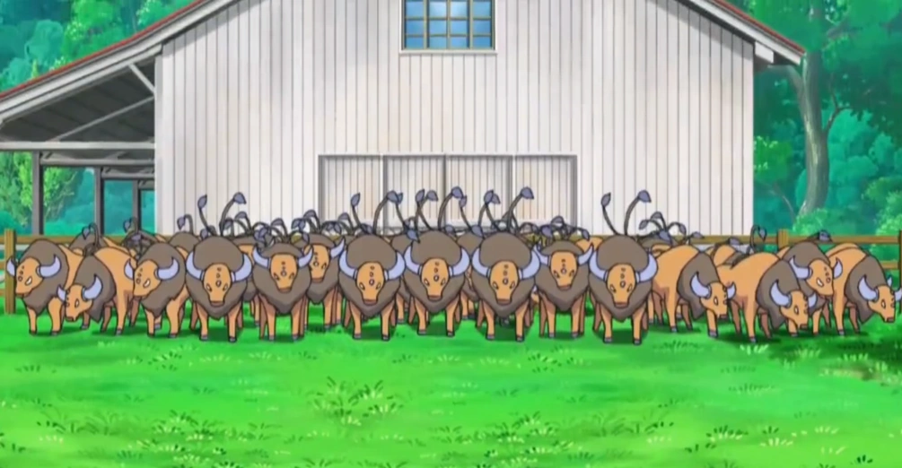

Mis Compañeros Tauros
Estos son todos los tauros que capture:

- Tauros 1:
Tauros es increíblemente rápido y salvaje; capturé treinta en el Safari. Siempre corren con fuerza, arrasan en combate y nunca se rinden.
¡Mis Tauros son pura energía y poder!
- Tauros 2:
Tauros es increíblemente rápido y salvaje; capturé treinta en el Safari. Siempre corren con fuerza, arrasan en combate y nunca se rinden.
¡Mis Tauros son pura energía!
- Tauros 3:
Tauros es increíblemente rápido y salvaje; capturé treinta en el Safari. Siempre corren con fuerza, arrasan en combate y nunca se rinden.
¡Mis Tauros son pura!
- Tauros 4:
Tauros es increíblemente rápido y salvaje; capturé treinta en el Safari. Siempre corren con fuerza, arrasan en combate y nunca se rinden.
¡Mis Tauros son!
- Tauros 5:
Tauros es increíblemente rápido y salvaje; capturé treinta en el Safari. Siempre corren con fuerza, arrasan en combate y nunca se rinden.
¡Mis Tauros!
- Tauros 6:
Tauros es increíblemente rápido y salvaje; capturé treinta en el Safari. Siempre corren con fuerza, arrasan en combate y nunca se rinden.
¡Mis!
- Tauros 7:
Tauros es increíblemente rápido y salvaje; capturé treinta en el Safari. Siempre corren con fuerza, arrasan en combate y nunca se rinden.
- Tauros 8:
Tauros es increíblemente rápido y salvaje; capturé treinta en el Safari. Siempre corren con fuerza, arrasan en combate y nunca se.
- Tauros 9:
Tauros es increíblemente rápido y salvaje; capturé treinta en el Safari. Siempre corren con fuerza, arrasan en combate y nunca.
- Tauros 10:
Tauros es increíblemente rápido y salvaje; capturé treinta en el Safari. Siempre corren con fuerza, arrasan en combate y.
- Tauros 11:
Tauros es increíblemente rápido y salvaje; capturé treinta en el Safari. Siempre corren con fuerza, arrasan en combate.
- Tauros 12:
Tauros es increíblemente rápido y salvaje; capturé treinta en el Safari. Siempre corren con fuerza, arrasan en.
- Tauros 13:
Tauros es increíblemente rápido y salvaje; capturé treinta en el Safari. Siempre corren con fuerza, arrasan.
- Tauros 14:
Tauros es increíblemente rápido y salvaje; capturé treinta en el Safari. Siempre corren con fuerza.
- Tauros 15:
Tauros es increíblemente rápido y salvaje; capturé treinta en el Safari. Siempre corren.
- Tauros 16:
Tauros es increíblemente rápido y salvaje; capturé treinta en el Safari.
- Tauros 17:
Tauros es increíblemente rápido y salvaje; capturé treinta.
- Tauros 18:
Tauros es increíblemente rápido y salvaje.
- Tauros 19:
Tauros es increíblemente rápido.
- Tauros 20:
Tauros es increíblemente.
- Tauros 21: Tauros es.
- Tauros 22: Tauros.
- Tauros 23: (¡Salta y embiste!)
- Tauros 24:
(Con una Master Ball lo capturé)
- Tauros 25: (¡Xd!)
- Tauros 26: (¡Poder!)
- Tauros 27: (¡Fuerza!)
- Tauros 28: (No eran suficientes...)
- Tauros 29: (¡Woo!)
- Tauros 30: (Este me dio pena)